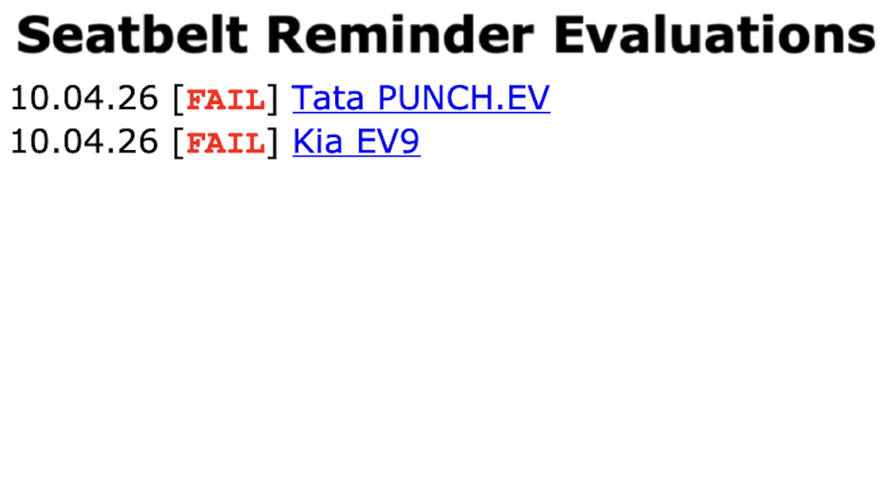

Tata Punch.ev and India-spec Kia EV9 fail latest Seatbelt Reminder Evaluations | The Yawning Chihuahua

The Yawning Chihuahua
Home | Seatbelt reminder evaluation | Twitter | Instagram | YouTube | Legacy website
NOTICE
Tata Punch.ev and India-spec Kia EV9 fail latest Seatbelt Reminder Evaluations
10.04.2026

The rear seatbelt reminder (SBR) evaluations for two models have been published today: the facelifted Tata Punch.ev and Kia EV9.
The Tata Punch.ev receives a FAIL result: it has no occupant detection, and issues its second-level audio and visual signal when any rear seatbelt is not fastened, regardless of occupancy.
The India-spec Kia EV9 also receives a FAIL result: based on the behaviour described in documentation, it would fail to notify unbelted occupants in common scenarios. Its rear seatbelt reminder does not have occupant detection, and only issues an audio signal when a rear seatbelt is fastened and then unfastened on the move. Based on documentation, this behaviour is not seen in EV9s destined for Europe and Australasia, which have occupant detection in the rear outboard seats, a prerequisite to score seat belt reminder points in consumer test programmes Euro NCAP and ANCAP.
More information about these results, including datasheets and sources of information for all cars are on the Rear Seatbelt Reminder Evaluations page.
-TYC
click to go back home